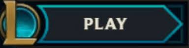

A legnagyobb segítség természetesen az lehet, hogyha a játékon belül mindent alaposan elolvasol. Melyik képesség mit jelent, mit tudnak a tárgyak és mennyibe kerülnek.
Miután rámész a  gombra
A Leage of Legends (mostantól LoL) egy nagyon egyszerű „sakk” alapokon nyugvó játék, amiben te a bábu szerepét töltöd be. Egyszerű végcélja van: Pusztítsd el az ellenség „Nexus kristályát”! Ezt a célt tartsd mindig a fejedben! (Sajnos sok, akár profi játékos is képes elfelejteni, hogy mi is a játék valódi célja és ezzel elrontani a játékélményt. Nem ölések számáról vagy aranygyűjtögetésről (farmolásról) szól a játék, bár ezek is fontosak.)
Amit jobb, ha előre megjegyzel az az, hogy ez a játék: nagyon (NAGYON) kompetitív. Mindig mindenki (a normális játékos legalábbis) a legjobbat próbálja kihozni magából, úgyhogy ne csodálkozz, ha egy-két keményebb meccs alatt leizzadsz mintha egy félmaratont futottál volna. Minden meccs pont ettől a versenyszerűségtől izgalmas, akkor is, ha ugyanazon a pályán játszódik ezredszerre is. Emiatt a tulajdonsága miatt lett mára az egyik legnépszerűbb e-sport. Nézd a közvetítéseket, ha van időd, mert nagyon izgalmasak tudnak lenni akár az évközi meccsek is, és nem utolsó sorban sokat tanulhatsz a profiktól!